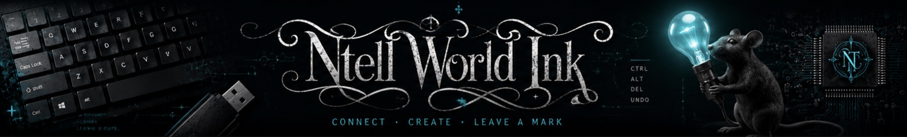
Learning materials in cybersecurity, AI literacy, Microsoft Office, and workplace digital skills.
One-hour, presenter-ready sessions in browser slide decks.
From surveillance capitalism and Cambridge Analytica to today's AI privacy settings: what "train our models" really means, and what never to type at all.
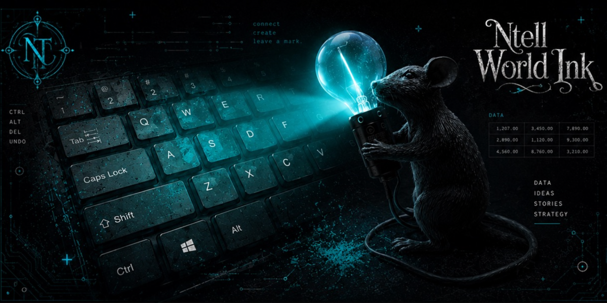
What happens to thinking when AI does the writing? New brain research on "cognitive debt", plus five thousand years of writing history.
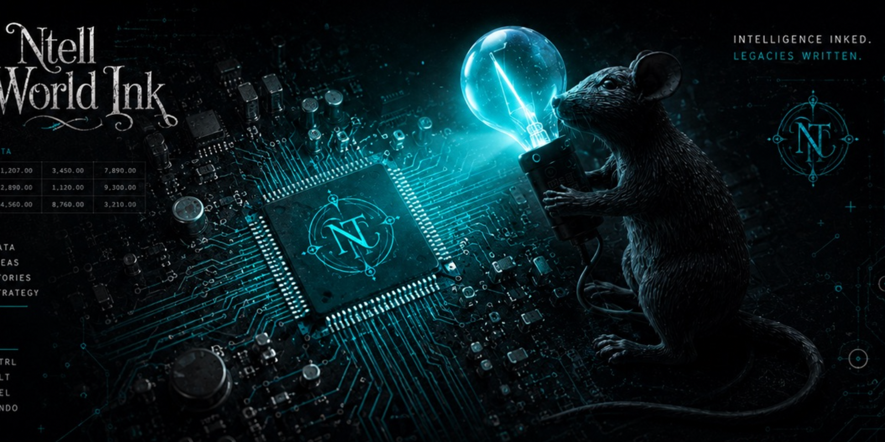
Is AI a bubble? Why the question has no tidy answer: circular financing, the US-China chip contest, information warfare and a military arms race.
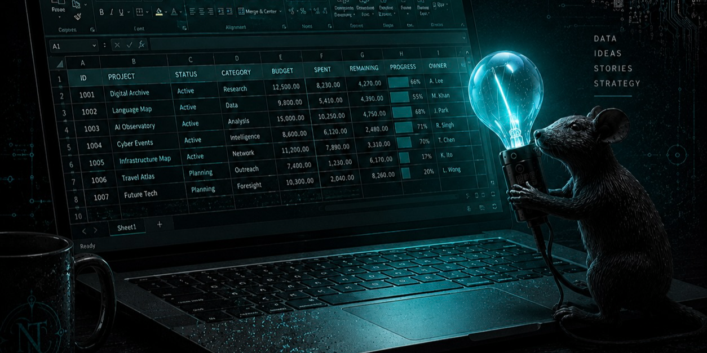
How benchmarks work and die, whose scores to trust, and how to spot an app repackaging a cheaper model under the hood.
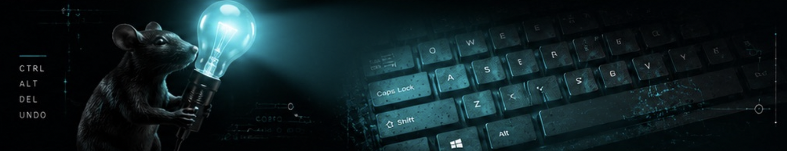
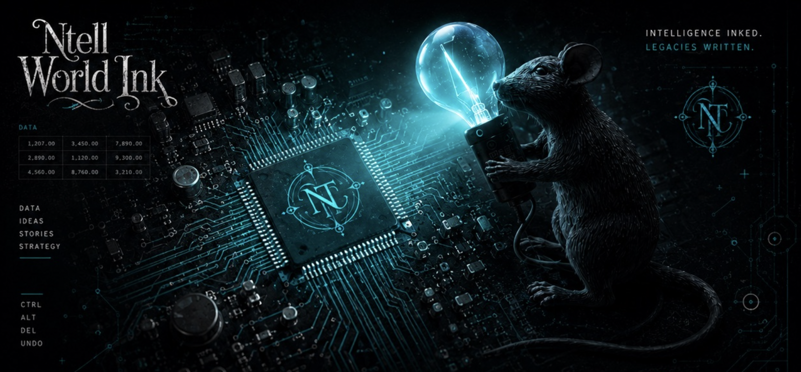
Decks open in any browser and work offline. Arrow keys to move, print to PDF.
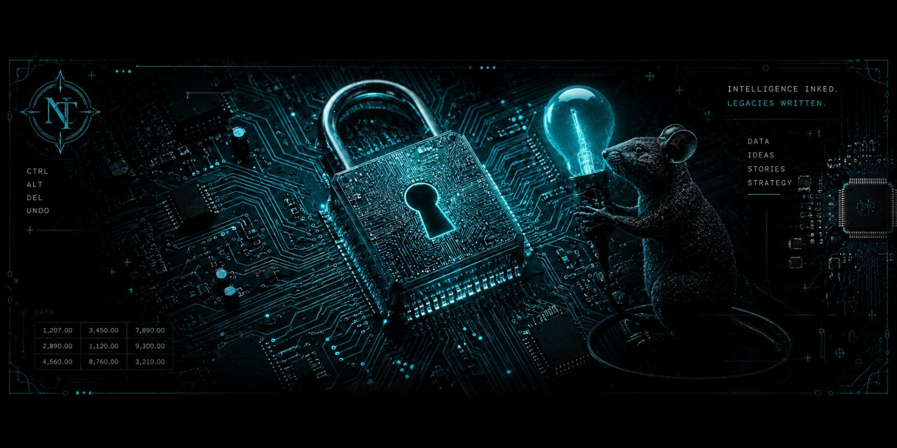
Voice cloning, deepfake endorsements, fake casinos and romance baiting; and the handful of habits that still beat all of them.
Why a code by text is weaker than an app, what a passkey actually is, and how to set both up without losing access.
What happens between pressing send and the message arriving, and why that explains almost every scam you will ever see.
Where Copilot helps in a spreadsheet, where it quietly gets things wrong, and how to check its work.
Why the pictures of buses exist, what they were really training, and what replaced them.
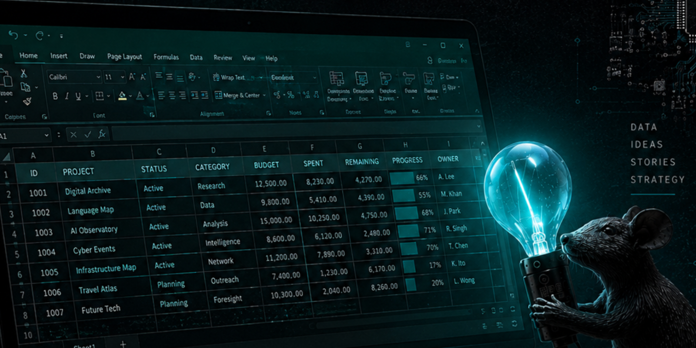
What is actually law, what is guidance, and what the Territory has done about it.
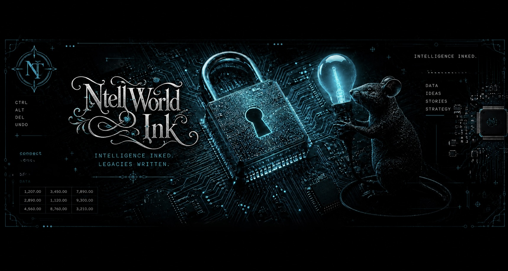
Why length beats complexity, and what to do about the twelve accounts you have already reused a password on.
A password made of four ordinary words is harder to guess than a short one full of symbols, and far easier to remember. The substitutions we were all taught in the 2000s, a zero for an O, a three for an E, are the first thing a cracking tool tries.
A passphrase you can recall without writing it down beats a stronger one taped to the monitor. Choose for the human, not the maths.
The other half of the problem is reuse. One breach at a service you forgot you signed up for becomes a way into your email, and your email is the key to everything else.
Work through these in the session.
Change your email password first. It is the recovery route for every other account you own, so it is the one worth doing properly.
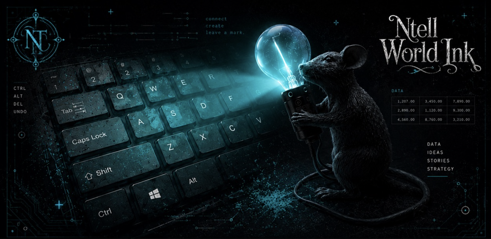
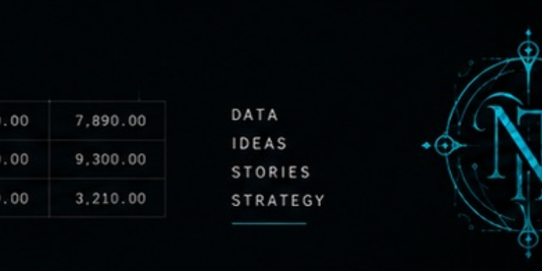
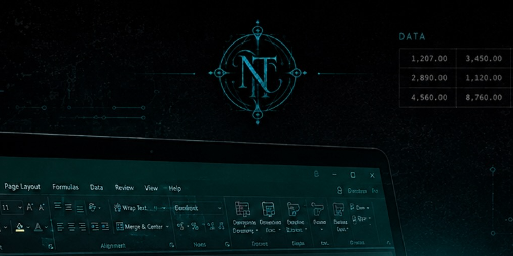
A filterable, searchable library of AI, cyber security and digital references: leaderboards, interactive tools, browsers and agents, safety trackers, policy hubs and more. Search by name, filter by category, and copy any entry as a clean link and note.
Talks, explainers, documentaries and podcast episodes on AI in education, practical tools, how AI actually works, safety and security, ethics, and where it is all heading.
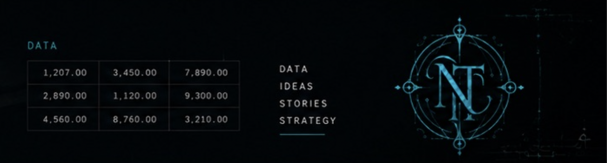
A filterable, searchable library of AI, cyber security and digital references: leaderboards, interactive tools, browsers and agents, safety trackers, policy hubs and more.
The policies, frameworks and proposed laws governing AI in Australia and internationally; from the AI Ethics Principles to the EU AI Act, plus NT-specific policy.
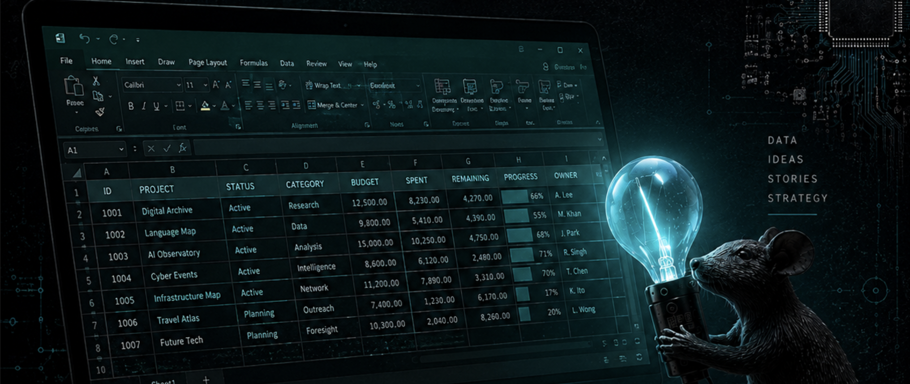
A spreadsheet is just a tidy grid for numbers and lists, and once you can find your way around it, a lot of everyday work gets quicker. This four-session course is a hands-on, plain-language introduction to Microsoft Excel for the workplace. You will move from naming the parts of the screen to entering data, writing simple sums, formatting it clearly, drawing a chart, and saving your work where you can find it again.
Excel can look busy and a little intimidating: a giant grid and a wall of buttons. The good news is that almost everything you will ever use lives in a handful of named areas, and once you can name them, the rest starts to make sense. This course is built to get you there, gently and at the keyboard.
You cannot break Excel by having a go. Nearly everything can be undone with Ctrl + Z. The fastest way to learn a spreadsheet is to click around in one.
Beginners, and anyone who wants to tidy up skills they half-remember. No prior Excel experience is assumed beyond basic comfort with a computer: using a mouse and keyboard, and opening and saving files. It suits people heading into administration, retail, community services, and remote-community roles, where keeping a simple list, budget, or roster in a spreadsheet is part of the work.
The practice files use everyday, work-ready scenarios rather than made-up data, so every skill lands on something familiar:
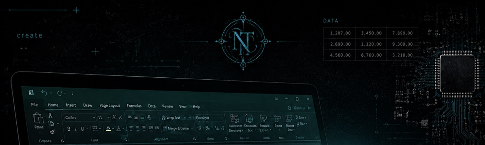
Naming the parts of the Excel window, moving around a sheet, entering text, numbers and dates, speeding up typing with AutoFill, and saving your work where you can find it.
Writing simple formulas, the order Excel does the maths in, and the five everyday functions: SUM, AVERAGE, COUNT, MAX and MIN.
Fonts, colours, borders, number formats like currency and percentage, and turning a table of numbers into the right kind of chart.
Sorting, filtering, tidy dropdown lists, then printing a clean report, with a short look at where to go next.
A plain-English glossary of every spreadsheet word used in the course, plus a short list of where to go next.
One page per session, printable, with the keyboard shortcuts and the five functions on it.
A blank starter workbook to practise in and a finished solution workbook to check your work against.
Seven standalone sessions. Each one is a browser slide deck with speaker notes.
Surveillance capitalism, the Cambridge Analytica story, what training on your data really means, platform-by-platform privacy settings, and the checklist to run before you type.
The MIT cognitive debt study, writing as brain exercise, five thousand years of writing history from Sumerian clay tablets to the scribal elite, and how to use AI without outsourcing your thinking.
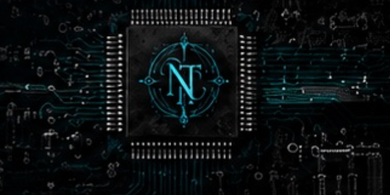
Why the bubble question has no tidy answer: circular financing, the US-China contest, information warfare, the military dimension, and what it all means for Northern Territory organisations.
Why the question has no fixed answer, how benchmarks saturate, why vendor scores beat independent ones, and how to spot a wrapper app.
How AI literacy differs from digital literacy, what the research scales really measure, why the definition is still moving, and when to declare your own AI use.
The third digital divide, what enterprise AI really costs, learning-optimised AI modes, the SOLAx WhatsApp academy, and equity strategies for the Northern Territory.
UNESCO readiness assessments for the Territory's biggest migrant-community homelands, the global sentiment and trust story, and what Anthropic's data reveals about how Australians actually use AI.
Five online sessions for Roper Gulf Regional Council staff, delivered via Teams. Each one builds practical, everyday skills in Microsoft 365 and AI, and links straight through to a hands-on practice tool at the moment you need it.
We acknowledge the Traditional Owners and custodians of the lands and waters across the Roper Gulf region, and their enduring connection to Country, culture and community. We pay our respects to Elders past and present.
Five sessions of two hours each, run live in Teams. The order is deliberate: we start with staying safe and understanding AI, then move into creating documents, working together, handling data, and finish with a relaxed wrap up. Every session has its own page below, laid out as a running order from start to finish.
Throughout the sessions you will see buttons that open a hands-on tool. Each one opens in a new browser tab, so this page stays put and you can flick back to it. The tools also live in the Simulation Tools catalogue, so you can return to any of them after the session.
Where the training sits in the council's AI direction, what stays out of AI tools, what Copilot is and how to prompt it, and setting up clean Word documents.
Joining and hosting Teams meetings, presenting a deck, recording with consent, and turning a Teams Premium recap into usable minutes.
A homework week. Staff gather their information and build their orientation deck, ready to bring to Session 3.
Presenting your deck live in Teams, sharing files with the right permissions, and using Copilot to draft and refine email.
Sort and filter, your first formulas, how Excel stores dates, and Copilot as a patient tutor for functions and formulas.
A relaxed close, open questions, and a memorable activity that shows what generative AI really does.